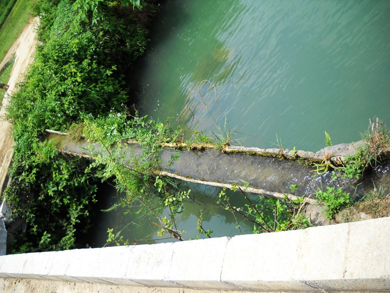

2011年8月，辞职回到家乡。在外流浪，已泯灭的记忆在这风景中依旧可以挖掘出星星点点。地点：平果县坡造镇龙马村&敬村，图片拍摄于9日正午
临近壮家大型节日七月十四，我们餐桌上的食物丰富起来。水煮鸭并无任何特殊佐料，夏天的傍晚，大伙一起其乐融融的坐到一起，畅聊这在外漂泊的故事。
随着务农的人越来越少，很多时候稻田得不到充分的管理。于是很多稻田就被种上了莲藕，只要到冬天水枯，就可以把藕挖出，作为冬日里的一道佳肴。
这是今年第一季的玉米，由于天气晴好，只要不要遇上阴雨天气，农民们更乐意将它们留在地里，让玉米更加干燥一些。
空心菜，南方夏天最常见的一种平民菜。这种菜只要烈日和暴雨，就可以疯狂的生长。而且我很喜欢这种菜。
在壮家的聚居地，你很容易看到类似的池塘点缀在村庄各处。池塘一般养有鱼，例如四大家鱼，罗非鱼等，这些鱼连同河里的鱼同为当定人晚餐的加菜。打渔作为农家青年闲暇时候的娱乐，很受大家欢迎。

大大小小的河流贯穿这壮家的聚居地，依山傍水，朴素的民风让你不在回味城市的喧嚣。


晚稻已经种下，再过几个月，这里将收获初冬的粮食。
莲子除去中间的苦心，生吃起来像花生的味道，这成了小孩们最爱的零食。